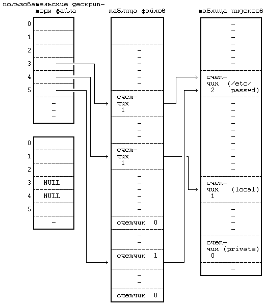

Процесс закрывает открытый файл, когда процессу больше не нужно обращаться к нему. Синтаксис вызова системной функции close (закрыть):
close(fd);
где fd - дескриптор открытого файла. Ядро выполняет операцию закрытия, используя дескриптор файла и информацию из соответствующих записей в таблице файлов и таблице индексов. Если счетчик ссылок в записи таблицы файлов имеет значение, большее, чем 1, в связи с тем, что были обращения к функциям dup или fork, то это означает, что на запись в таблице файлов делают ссылку другие пользовательские дескрипторы, что мы увидим далее; ядро уменьшает значение счетчика и операция закрытия завершается. Если счетчик ссылок в таблице файлов имеет значение, равное 1, ядро освобождает запись в таблице и индекс в памяти, ранее выделенный системной функцией open (алгоритм iput). Если другие процессы все еще ссылаются на индекс, ядро уменьшает значение счетчика ссылок на индекс, но оставляет индекс процессам; в противном случае индекс освобождается для переназначения, так как его счетчик ссылок содержит 0. Когда выполнение системной функции close завершается, запись в таблице пользовательских дескрипторов файла становится пустой. Попытки процесса использовать данный дескриптор заканчиваются ошибкой до тех пор, пока дескриптор не будет переназначен другому файлу в результате выполнения другой системной функции. Когда процесс завершается, ядро проверяет наличие активных пользовательских дескрипторов файла, принадлежавших процессу, и закрывает каждый из них. Таким образом, ни один процесс не может оставить файл открытым после своего завершения.
#include <fcntl.h>
main(argc,argv)
int argc;
char *argv[];
{
int fd,skval;
char c;
if(argc != 2)
exit();
fd = open(argv[1],O_RDONLY);
if (fd == -1)
exit();
while ((skval = read(fd,&c,1)) == 1)
{
printf("char %c\n",c);
skval = lseek(fd,1023L,1);
printf("new seek val %d\n",skval);
}
} |
|
Рисунок 5.10. Программа, содержащая вызов системной функции lseek
На Рисунке 5.11, например, показаны записи из таблиц, приведенных на Рисунке 5.4, после того, как второй процесс закрывает соответствующие им файлы. Записи, соответствующие дескрипторам 3 и 4 в таблице пользовательских дескрипторов файлов, пусты. Счетчики в записях таблицы файлов теперь имеют значение 0, а сами записи пусты. Счетчики ссылок на файлы "/etc/passwd" и "private" в индексах также уменьшились. Индекс для файла "private" находится в списке свободных индексов, поскольку счетчик ссылок на него равен 0, но запись о нем не пуста. Если еще какой-нибудь процесс обратится к файлу "private", пока индекс еще находится в списке свободных индексов, ядро востребует индекс обратно, как показано в разделе 4.1.2.

Рисунок 5.11. Таблицы после закрытия файла
Предыдущая глава || Оглавление || Следующая глава
{kind=link}